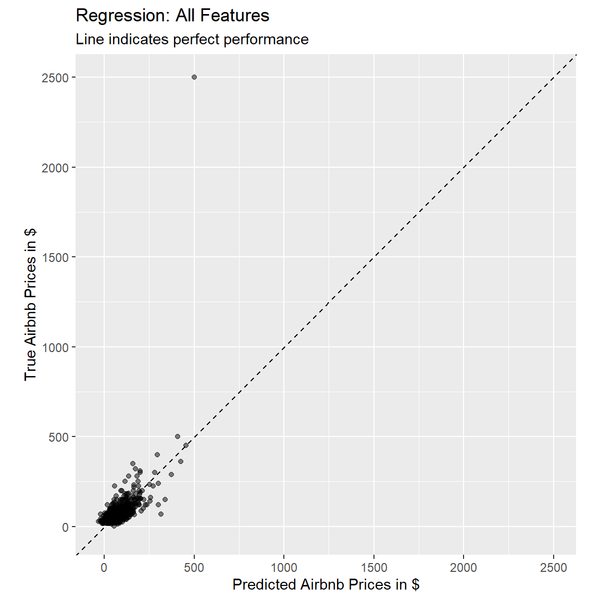
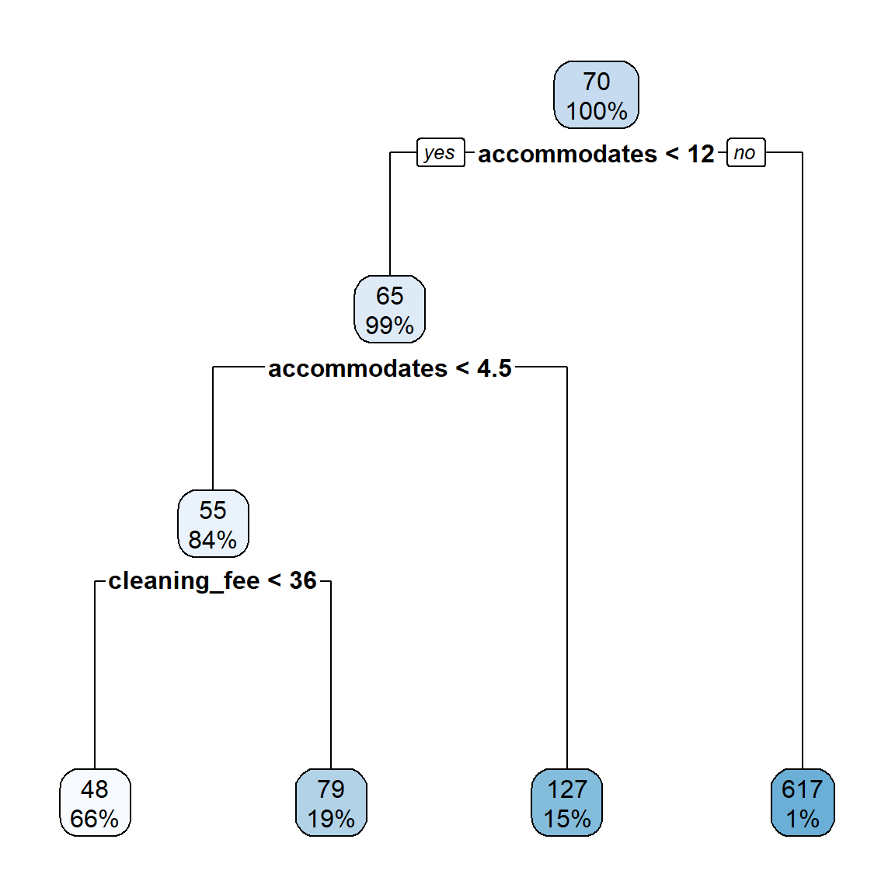
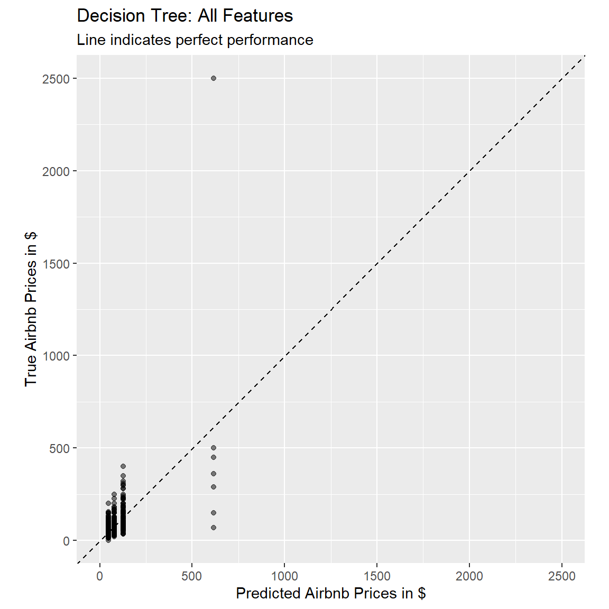
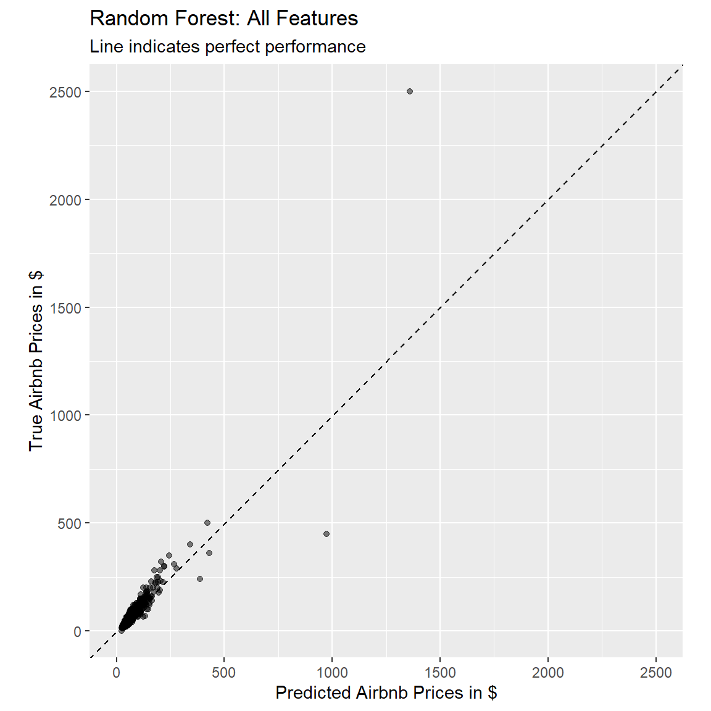
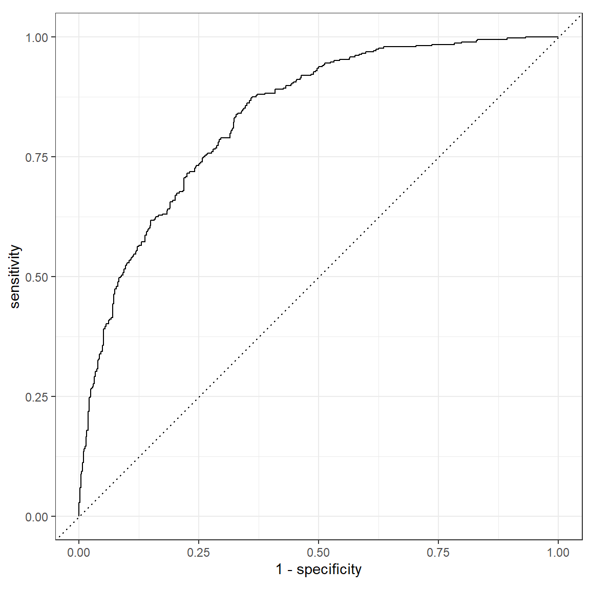
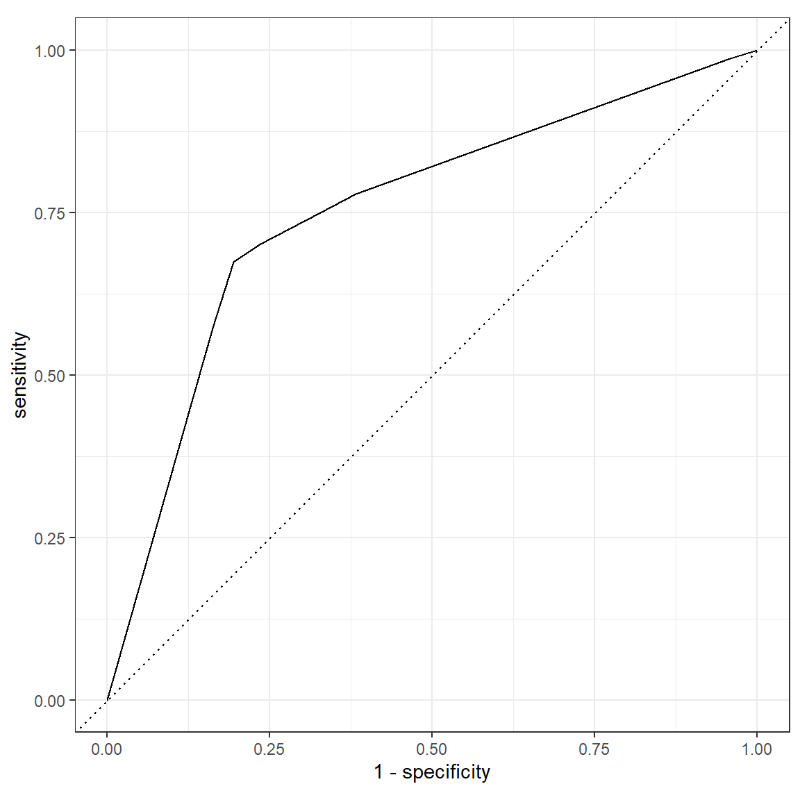
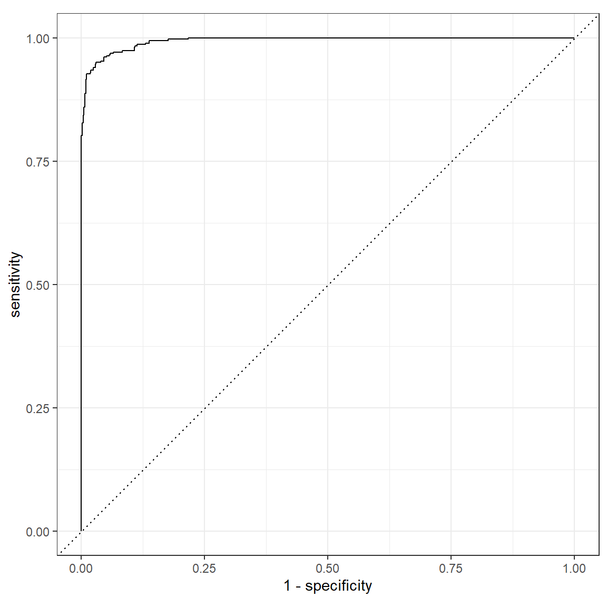
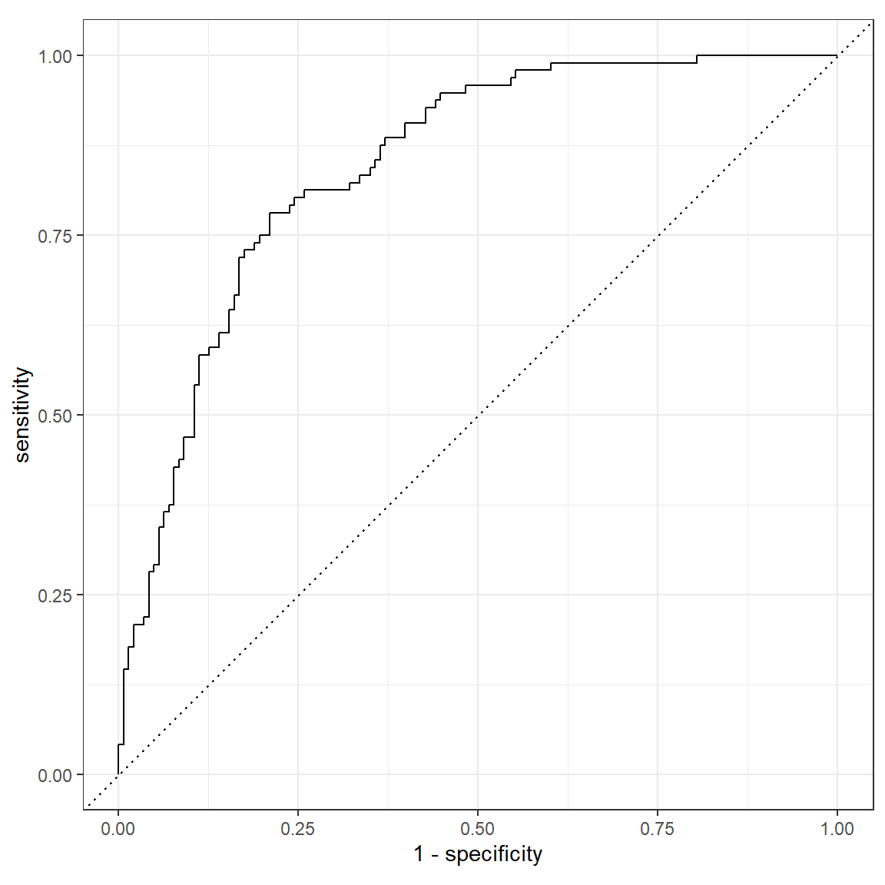
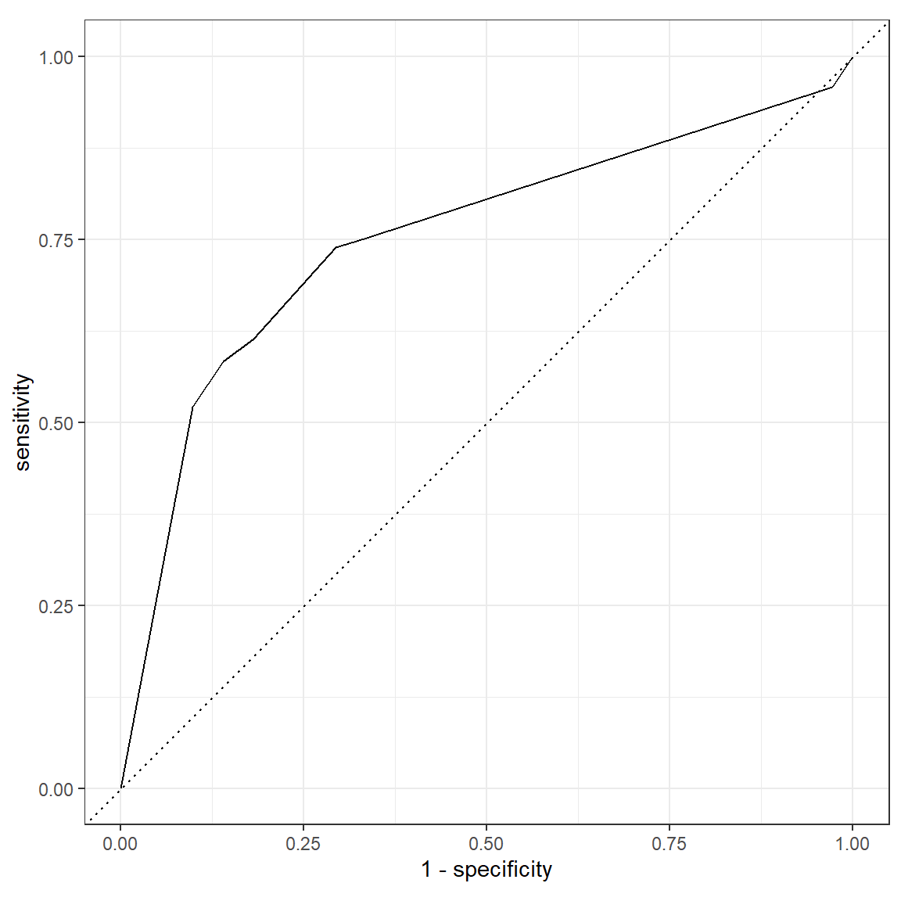
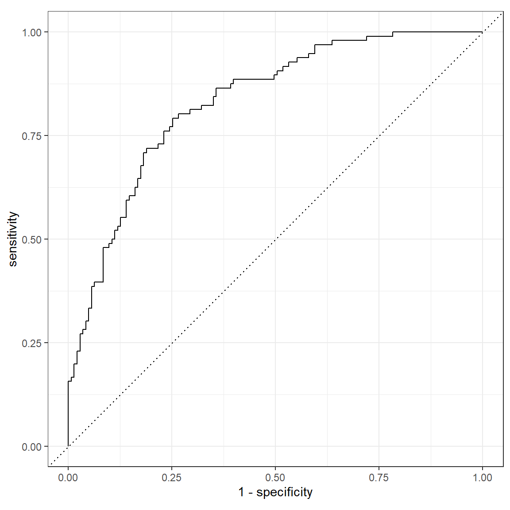

Prediction
|
Applied Machine Learning with R The R Bootcamp @ AMLD |

|
from Medium.com

Overview
By the end of this practical you will know how to:
- Fit regression, decision trees and random forests to training data.
- Evaluate model fitting and prediction performance in a test set.
- Compare the fitting and prediction performance of two models.
- Explore the effects of features on model predictions.
Tasks
A - Setup
Open your
TheRBootcampR project. It should already have the folders1_Dataand2_Code. Make sure that the data file(s) listed in theDatasetssection are in your1_Datafolder.Open a new R script and save it as a new file called
Prediction_practical.Rin the2_Codefolder.Using
library()load the set of packages for this practical listed in the packages section above.
# Load packages necessary for this script
library(rpart.plot)
library(tidyverse)
library(tidymodels)
tidymodels_prefer() # to resolve common conflicts- We will again work with the
airbnbdata. Load the dataset using the code below.
# airbnb data
airbnb <- read_csv(file = "1_Data/airbnb.csv")- You should already be familiar with the dataset, but you can refresh your memory by checking the variable names with
names()and the contents usingView().
B - Splitting the data into training and test set
- In the previous practical, we used the complete
airbnbdataset to fit the models. To avoid over-fitting, we will now split the data into a training- and a test-set. Use theinitial_split()function to create a split. Pass it theairbnbdata as argument and save the output asairbnb_split.
# initialize split
XX <- XX(XX)airbnb_split <- initial_split(airbnb)- Create a training-set using the
training()function. Pass it theairbnb_splitobject as argument and save the output asairbnb_train.
# training data
XX <- XX(XX)airbnb_train <- training(airbnb_split)- Create a test-set using the
testing()function. Pass it theairbnb_splitobject as argument and save the output asairbnb_test.
# test data
XX <- XX(XX)airbnb_test <- testing(airbnb_split)B - Fitting
Your goal in this set of tasks is again to fit models predicting price, the price of Airbnbs located in Berlin.
Regression
- Define a recipe called
lm_recipeby calling therecipe()function. Use all available predictors by setting the formula toprice ~ .and use theairbnb_traindata. Also, add a pipe (%>%) andstep_dummy(all_nominal_predictors())to dummy-code all categorical predictors.
# create recipe
XX <-
XX(XX, data = XX) %>%
XX(XX())# create recipe
lm_recipe <-
recipe(price ~ ., data = airbnb_train) %>%
step_dummy(all_nominal_predictors())- Print the recipe.
lm_recipeData Recipe
Inputs:
role #variables
outcome 1
predictor 22
Operations:
Dummy variables from all_nominal_predictors()- Create a regression model by
- calling the
linear_reg()function. - adding a pipe and setting the enginge to
"lm"usingset_engine(). - specifying the problem mode to
"regression"usingset_mode(). - saving the output as
lm_model.
# set up the regression model
XX <-
XX() %>%
XX(XX) %>%
XX(XX)# set up the regression model
lm_model <-
linear_reg() %>%
set_engine("lm") %>%
set_mode("regression")- Print the model.
lm_modelLinear Regression Model Specification (regression)
Computational engine: lm - Create a workflow called
lm_workflowusingworkflow()and add thelm_recipeandlm_modelobjects usingadd_recipe()andadd_model().
# lm workflow
lm_workflow <-
XX() %>%
XX(XX) %>%
XX(XX)# lm workflow
lm_workflow <-
workflow() %>%
add_recipe(lm_recipe) %>%
add_model(lm_model)- Print the workflow.
lm_workflow== Workflow ====================================================================
Preprocessor: Recipe
Model: linear_reg()
-- Preprocessor ----------------------------------------------------------------
1 Recipe Step
* step_dummy()
-- Model -----------------------------------------------------------------------
Linear Regression Model Specification (regression)
Computational engine: lm - Fit the model on the training data by passing the
lm_workflowand theairbnb_traindata to thefit()function and save the output asprice_lm.
# Fit the regression model
XX <-
XX %>%
XX(XX)# Fit the regression model
price_lm <-
lm_workflow %>%
fit(airbnb_train)- Using the
tidy()function on theprice_lmobject, take a look at the parameter estimates.
# regression model parameters
tidy(price_lm)# A tibble: 35 x 5
term estimate std.error statistic p.value
<chr> <dbl> <dbl> <dbl> <dbl>
1 (Intercept) -145. 84.6 -1.71 8.80e- 2
2 accommodates 23.2 2.20 10.5 1.74e-24
3 bedrooms 15.3 5.54 2.75 6.00e- 3
4 bathrooms 20.2 9.00 2.25 2.50e- 2
5 cleaning_fee -0.285 0.117 -2.43 1.53e- 2
6 availability_90_days -0.0309 0.0941 -0.328 7.43e- 1
7 host_response_rate -0.153 0.336 -0.455 6.49e- 1
8 host_superhostTRUE 9.64 6.29 1.53 1.26e- 1
9 host_listings_count 0.328 0.674 0.486 6.27e- 1
10 review_scores_accuracy 11.6 7.34 1.58 1.14e- 1
# ... with 25 more rows- Using the
predict()function, to extract the model predictions fromprice_lmand bind them together with the true values fromairbnb_trainusingbind_cols().
# get predicted values from training data
lm_pred <-
XX %>%
XX(XX) %>%
XX(airbnb_train %>% select(price))# get predicted values from training data
lm_pred <-
price_lm %>%
predict(new_data = airbnb_train) %>%
bind_cols(airbnb_train %>% select(price))- Using the
metrics()function, evaluate the model performance. Pass it thepricevariable astruthand the.predvariable asestimate.
# evaluate performance
XX(lm_pred, truth = XX, estimate = XX)# evaluate performance
metrics(lm_pred, truth = price, estimate = .pred)# A tibble: 3 x 3
.metric .estimator .estimate
<chr> <chr> <dbl>
1 rmse standard 77.2
2 rsq standard 0.358
3 mae standard 30.0 - Using the following code, plot the fitted against the true value, to judge how well our model performed.
# use the lm_pred object to generate the plot
ggplot(lm_pred, aes(x = .pred, y = price)) +
# Create a diagonal line:
geom_abline(lty = 2) +
# Add data points:
geom_point(alpha = 0.5) +
labs(title = "Regression: All Features",
subtitle = "Line indicates perfect performance",
x = "Predicted Airbnb Prices in $",
y = "True Airbnb Prices in $") +
# Scale and size the x- and y-axis uniformly:
coord_obs_pred()
Decision Trees
- Decision trees don’t need categorical variables to be dummy coded. Create a new recipe called
tree_recipethat uses all available predictors to predict thepriceof Airbnbs based on theairbnb_traindata. In addition, use the pre-proccessing stepstep_other(all_nominal_predictors(), threshold = 0.005). This will lump together all cases of categorical variables that make up less than 0.5% of the cases into anothercategory. This will prevent issues when assessing performance using the test set.
tree_recipe <-
recipe(price ~ ., data = airbnb_train) %>%
step_other(all_nominal_predictors(), threshold = 0.005)- Set up a decision tree model. Use the
decision_tree()function to specify the model, and set the engine torpart. Set the mode to"regression". Call the outputdt_model.
# set up the decision tree model
XX <-
XX() %>%
XX(XX) %>%
XX(XX)# set up the decision tree model
dt_model <-
decision_tree() %>%
set_engine("rpart") %>%
set_mode("regression")- Create a new workflow
dt_workflow, where you add the newly createdtree_recipeand thedt_model.
# decision tree workflow
dt_workflow <-
XX() %>%
XX(XX) %>%
XX(XX)# decision tree workflow
dt_workflow <-
workflow() %>%
add_recipe(tree_recipe) %>%
add_model(dt_model)- Print the workflow.
dt_workflow== Workflow ====================================================================
Preprocessor: Recipe
Model: decision_tree()
-- Preprocessor ----------------------------------------------------------------
1 Recipe Step
* step_other()
-- Model -----------------------------------------------------------------------
Decision Tree Model Specification (regression)
Computational engine: rpart - Fit the model on the training data by passing the
dt_workflowand theairbnb_traindata to thefit()function and save the output asprice_dt.
# Fit the decision tree
XX <-
XX %>%
XX(XX)# Fit the decision tree
price_dt <-
dt_workflow %>%
fit(airbnb_train)- The
tidy()function won’t work with decision tree fit objects, but we can print the output using the following code:
# print the decision tree output
price_dt %>%
extract_fit_parsnip() %>%
pluck("fit")n= 893
node), split, n, deviance, yval
* denotes terminal node
1) root 893 8280000 69.7
2) accommodates< 11.5 886 1890000 65.4
4) accommodates< 4.5 754 708000 54.7
8) cleaning_fee< 35.5 585 330000 47.6 *
9) cleaning_fee>=35.5 169 246000 79.3 *
5) accommodates>=4.5 132 599000 127.0 *
3) accommodates>=11.5 7 4280000 617.0 *- Alternatively, we can pass the object you printed in the previous task in the
rpart.plotfunction. This will create a visualization of the decision tree (in this case, the plot does not look very usefull, but depending on the variables used by the model it can be).
price_dt %>%
extract_fit_parsnip() %>%
pluck("fit") %>%
rpart.plot()
- Using the
predict()function, to extract the model predictions fromprice_dtand bind them together with the true values fromairbnb_trainusingbind_cols().
# get predicted values from training data
dt_pred <-
XX %>%
XX(XX) %>%
XX(airbnb_train %>% select(price))# get predicted values from training data
dt_pred <-
price_dt %>%
predict(new_data = airbnb_train) %>%
bind_cols(airbnb_train %>% select(price))- Using the
metrics()function, evaluate the model performance. Pass it thepricevariable astruthand the.predvariable asestimate.
# evaluate performance
XX(dt_pred, truth = XX, estimate = XX)# evaluate performance
metrics(dt_pred, truth = price, estimate = .pred)# A tibble: 3 x 3
.metric .estimator .estimate
<chr> <chr> <dbl>
1 rmse standard 78.2
2 rsq standard 0.341
3 mae standard 28.0 How does the model performance of the decision tree compare to the one of the regression model, based on the training data?
Using the following code, plot the fitted against the true value, to judge how well our model performed.
# use the dt_pred object to generate the plot
ggplot(dt_pred, aes(x = .pred, y = price)) +
# Create a diagonal line:
geom_abline(lty = 2) +
# Add data points:
geom_point(alpha = 0.5) +
labs(title = "Decision Tree: All Features",
subtitle = "Line indicates perfect performance",
x = "Predicted Airbnb Prices in $",
y = "True Airbnb Prices in $") +
# Scale and size the x- and y-axis uniformly:
coord_obs_pred()
Random Forests
- As random forests are made up of many decision trees, we can use the recipe we defined for the decision tree, so we only have to set up a random forest model. Use the
rand_forest()function to specify the model, and set the engine to"ranger". Set the mode to"regression". Call the outputrf_model.
# set up the random forest model
XX <-
XX() %>%
XX(XX) %>%
XX(XX)# set up the random forest model
rf_model <-
rand_forest() %>%
set_engine("ranger") %>%
set_mode("regression")- Create a new workflow
rf_workflow, where you add thetree_recipeand the newly createdrf_model.
# random forest workflow
rf_workflow <-
XX() %>%
XX(XX) %>%
XX(XX)# random forest workflow
rf_workflow <-
workflow() %>%
add_recipe(tree_recipe) %>%
add_model(rf_model)- Print the workflow.
rf_workflow== Workflow ====================================================================
Preprocessor: Recipe
Model: rand_forest()
-- Preprocessor ----------------------------------------------------------------
1 Recipe Step
* step_other()
-- Model -----------------------------------------------------------------------
Random Forest Model Specification (regression)
Computational engine: ranger - Fit the model on the training data by passing the
rf_workflowand theairbnb_traindata to thefit()function and save the output asprice_rf.
# Fit the random forest
XX <-
XX %>%
XX(XX)# Fit the random forest
price_rf <-
rf_workflow %>%
fit(airbnb_train)- The
tidy()function won’t work with random forest fit objects, but we can print the output using the following code:
# print the random forest output
price_rf %>%
extract_fit_parsnip() %>%
pluck("fit")Ranger result
Call:
ranger::ranger(x = maybe_data_frame(x), y = y, num.threads = 1, verbose = FALSE, seed = sample.int(10^5, 1))
Type: Regression
Number of trees: 500
Sample size: 893
Number of independent variables: 22
Mtry: 4
Target node size: 5
Variable importance mode: none
Splitrule: variance
OOB prediction error (MSE): 7487
R squared (OOB): 0.193 - Using the
predict()function, to extract the model predictions fromprice_rfand bind them together with the true values fromairbnb_trainusingbind_cols().
# get predicted values from training data
rf_pred <-
XX %>%
XX(XX) %>%
XX(airbnb_train %>% select(price))# get predicted values from training data
rf_pred <-
price_rf %>%
predict(new_data = airbnb_train) %>%
bind_cols(airbnb_train %>% select(price))- Using the
metrics()function, evaluate the model performance. Pass it thepricevariable astruthand the.predvariable asestimate.
# evaluate performance
XX(rf_pred, truth = XX, estimate = XX)# evaluate performance
metrics(rf_pred, truth = price, estimate = .pred)# A tibble: 3 x 3
.metric .estimator .estimate
<chr> <chr> <dbl>
1 rmse standard 45.4
2 rsq standard 0.819
3 mae standard 12.9 How does the training performance of the random forest compare to the ones of the other two models?
Using the following code, plot the fitted against the true value, to judge how well our model performed.
# use the rf_pred object to generate the plot
ggplot(rf_pred, aes(x = .pred, y = price)) +
# Create a diagonal line:
geom_abline(lty = 2) +
# Add data points:
geom_point(alpha = 0.5) +
labs(title = "Random Forest: All Features",
subtitle = "Line indicates perfect performance",
x = "Predicted Airbnb Prices in $",
y = "True Airbnb Prices in $") +
# Scale and size the x- and y-axis uniformly:
coord_obs_pred()
C - Prediction
- Before we compared the training performances. Now, let’s compare the out-of-sample performances on the test-set. First the linear regression. Using the
predict()function, to extract the model predictions fromprice_lm, but this time based onairbnb_testand bind them together with the true values fromairbnb_testusingbind_cols(). Save the output aslm_pred_test
# get predicted values from test data
lm_pred_test <-
XX %>%
XX(XX) %>%
XX(airbnb_test %>% select(price))# get predicted values from test data
lm_pred_test <-
price_lm %>%
predict(new_data = airbnb_test) %>%
bind_cols(airbnb_test %>% select(price))- Repeat the step above with the decision tree and random forest fits, to create
dt_pred_testandrf_pred_test.
# decision tree
dt_pred_test <-
price_dt %>%
predict(new_data = airbnb_test) %>%
bind_cols(airbnb_test %>% select(price))
# random forest
rf_pred_test <-
price_rf %>%
predict(new_data = airbnb_test) %>%
bind_cols(airbnb_test %>% select(price))- Using the
metrics()function, evaluate the models’ out-of-sample performances. Pass it thepricevariable astruthand the.predvariable asestimate.
# evaluate performance
XX(XX, truth = XX, estimate = XX)
XX(XX, truth = XX, estimate = XX)
XX(XX, truth = XX, estimate = XX)# evaluate performance
metrics(lm_pred_test, truth = price, estimate = .pred)# A tibble: 3 x 3
.metric .estimator .estimate
<chr> <chr> <dbl>
1 rmse standard 49.3
2 rsq standard 0.524
3 mae standard 30.2 metrics(dt_pred_test, truth = price, estimate = .pred)# A tibble: 3 x 3
.metric .estimator .estimate
<chr> <chr> <dbl>
1 rmse standard 52.6
2 rsq standard 0.483
3 mae standard 29.0 metrics(rf_pred_test, truth = price, estimate = .pred)# A tibble: 3 x 3
.metric .estimator .estimate
<chr> <chr> <dbl>
1 rmse standard 33.9
2 rsq standard 0.799
3 mae standard 22.3 - Which model performs the best based on the test data?
# The random forest predictions are still the most accurate.- Which performance stays the most constant?
# The regression model's performance is very similar in the training and
# test data. The test performance of the decision tree drops somewhat and
# the test performance of the random forest has the most significant drop
# in comparison to it's training performance.- Which of the three models has the best prediction performance?
# The random forest predictions are still the most accurate.D - Classification
- Let’s again turn to a classification example. We will again focus on the
host_superhostvariable. Like in the previous practical, we first have to change our criterion to be afactor. We again explicitly specifyTRUEas first level.
# Recode host_superhost to be a factor with TRUE as first level
airbnb <-
airbnb %>%
mutate(host_superhost = factor(host_superhost, levels = c(TRUE, FALSE)))- Create a split that balances the proportion of the two levels of
host_superhostand that uses 80% of the data for the training.
airbnb_split <- initial_split(XX, prop = XX, strata = XX)airbnb_split <- initial_split(airbnb, prop = .8, strata = host_superhost)- From the initial split object, creat a training and a test set, and save them as
airbnb_trainandairbnb_test.
XX <- XX(XX)
XX <- XX(XX)airbnb_train <- training(airbnb_split)
airbnb_test <- testing(airbnb_split)F - Fitting
Regression
- Specify the recipe for a logistic regression. Specifically…
- set the formula to
host_superhost ~ ., to use all possible features - use the
airbnb_traindata - add
step_dummy(all_nominal_predictors())to pre-process nominal features - call the new object
logistic_recipe
# create new recipe
XX <-
XX(XX, data = XX) %>%
XX(XX())# create new recipe
logistic_recipe <-
recipe(host_superhost ~ ., data = airbnb_train) %>%
step_dummy(all_nominal_predictors())- Print the new recipe.
logistic_recipeData Recipe
Inputs:
role #variables
outcome 1
predictor 22
Operations:
Dummy variables from all_nominal_predictors()- Create a new model called
logistic_model, with the model typelogistic_reg, the engine"glm", and mode"classification".
# create a logistic regression model
XX_model <-
XX() %>%
set_XX(XX) %>%
set_XX(XX)# create a logistic regression model
logistic_model <-
logistic_reg() %>%
set_engine("glm") %>%
set_mode("classification")- Create a new workflow called
logistic_workflow, where you add thelogistic_modeland thelogistic_recipetogether.
# create logistic_workflow
logistic_workflow <-
workflow() %>%
add_recipe(logistic_recipe) %>%
add_model(logistic_model)- Fit the model on the training data (
airbnb_train) usingfit(). Save the result assuperhost_glm.
# Fit the logistic regression model
superhost_glm <-
logistic_workflow %>%
fit(airbnb_train)- Evaluate the training performance with the
metrics()function to do so. First, we again create a dataset containing the predicted and true values. This time, we call thepredict()function twice: once to obtain the predicted classes, and once to obtain the probabilities, with which the classes are predicted.
# Get fitted values from the Private_glm object
logistic_pred <-
predict(superhost_glm, airbnb_train, type = "prob") %>%
bind_cols(predict(superhost_glm, airbnb_train)) %>%
bind_cols(airbnb_train %>% select(host_superhost))- Let’s look at different performance metrics. Use the
metrics()function and pass it thehost_superhostvariable astruth, the.pred_classvariable asestimate, and.pred_TRUEas last argument.
XX(logistic_pred, truth = XX, estimate = XX, XX)metrics(logistic_pred, truth = host_superhost, estimate = .pred_class, .pred_TRUE)# A tibble: 4 x 3
.metric .estimator .estimate
<chr> <chr> <dbl>
1 accuracy binary 0.75
2 kap binary 0.483
3 mn_log_loss binary 0.491
4 roc_auc binary 0.833- Plot the ROC-curve using the
roc_curve()function, to create sensitivity and specificity values of different cut-offs, and pass this into theautoplot()function, to plot the curve. Add thehost_superhostcolumn astruth, and the.pred_TRUEcolumn as third, unnamed argument, to theroc_curve()function and plot the curve.
XX(logistic_pred, truth = XX, XX) %>%
autoplot()roc_curve(logistic_pred, truth = host_superhost, .pred_TRUE) %>%
autoplot()
Decision Tree
- Create a new recipe called
tree_recipethat uses all available predictors to predicthost_superhost. In addition, again use the pre-processing stepstep_other(all_nominal_predictors(), threshold = 0.005).
tree_recipe <-
recipe(host_superhost ~ ., data = airbnb_train) %>%
step_other(all_nominal_predictors(), threshold = 0.005)- Set up a decision tree model. Use the
decision_tree()function to specify the model, and set the engine torpart. Set the mode to"classification". Call the outputdt_model.
# set up the decision tree model
dt_model <-
decision_tree() %>%
set_engine("rpart") %>%
set_mode("classification")- Create a new workflow
dt_workflow, where you add the newly createdtree_recipeand thedt_model.
# decision tree workflow
dt_workflow <-
workflow() %>%
add_recipe(tree_recipe) %>%
add_model(dt_model)- Print the workflow.
dt_workflow== Workflow ====================================================================
Preprocessor: Recipe
Model: decision_tree()
-- Preprocessor ----------------------------------------------------------------
1 Recipe Step
* step_other()
-- Model -----------------------------------------------------------------------
Decision Tree Model Specification (classification)
Computational engine: rpart - Fit the model on the training data by passing the
dt_workflowand theairbnb_traindata to thefit()function and save the output assuperhost_dt.
# Fit the decision tree
superhost_dt <-
dt_workflow %>%
fit(airbnb_train)- Evaluate the training performance with the
metrics()function to do so. Use the code from the logistic regression above as template. Save the output asdt_pred.
dt_pred <-
predict(superhost_dt, airbnb_train, type = "prob") %>%
bind_cols(predict(superhost_dt, airbnb_train)) %>%
bind_cols(airbnb_train %>% select(host_superhost))- Let’s look at different performance metrics. Use the
metrics()function and pass it thehost_superhostvariable astruth, the.pred_classvariable asestimate, and.pred_TRUEas last argument.
metrics(dt_pred, truth = host_superhost, estimate = .pred_class, .pred_TRUE)# A tibble: 4 x 3
.metric .estimator .estimate
<chr> <chr> <dbl>
1 accuracy binary 0.753
2 kap binary 0.484
3 mn_log_loss binary 0.552
4 roc_auc binary 0.754- Plot the ROC-curve using the
roc_curve()function, to create sensitivity and specificity values of different cut-offs, and pass this into theautoplot()function, to plot the curve. Add thehost_superhostcolumn astruth, and the.pred_TRUEcolumn as third, unnamed argument, to theroc_curve()function and plot the curve.
roc_curve(dt_pred, truth = host_superhost, .pred_TRUE) %>%
autoplot()
Random Forest
- Set up a random forest classification model. Use the
rand_forest()function to specify the model, and set the engine toranger. Set the mode to"classification". Call the outputrf_model.
# set up the random forest model
rf_model <-
rand_forest() %>%
set_engine("ranger") %>%
set_mode("classification")- Create a new workflow
rf_workflow, where you add the previously createdtree_recipeand the newrf_model.
# random forest workflow
rf_workflow <-
workflow() %>%
add_recipe(tree_recipe) %>%
add_model(rf_model)- Print the workflow.
rf_workflow== Workflow ====================================================================
Preprocessor: Recipe
Model: rand_forest()
-- Preprocessor ----------------------------------------------------------------
1 Recipe Step
* step_other()
-- Model -----------------------------------------------------------------------
Random Forest Model Specification (classification)
Computational engine: ranger - Fit the model on the training data by passing the
rf_workflowand theairbnb_traindata to thefit()function and save the output assuperhost_rf.
# Fit the random forest
superhost_rf <-
rf_workflow %>%
fit(airbnb_train)- Evaluate the training performance with the
metrics()function to do so and save the output asrf_pred.
rf_pred <-
predict(superhost_rf, airbnb_train, type = "prob") %>%
bind_cols(predict(superhost_rf, airbnb_train)) %>%
bind_cols(airbnb_train %>% select(host_superhost))- Let’s look at different performance metrics. Use the
metrics()function and pass it thehost_superhostvariable astruth, the.pred_classvariable asestimate, and.pred_TRUEas last argument.
metrics(rf_pred, truth = host_superhost, estimate = .pred_class, .pred_TRUE)# A tibble: 4 x 3
.metric .estimator .estimate
<chr> <chr> <dbl>
1 accuracy binary 0.961
2 kap binary 0.919
3 mn_log_loss binary 0.280
4 roc_auc binary 0.994- Plot the ROC-curve using the
roc_curve()function, to create sensitivity and specificity values of different cut-offs, and pass this into theautoplot()function, to plot the curve.
roc_curve(rf_pred, truth = host_superhost, .pred_TRUE) %>%
autoplot()
G - Prediction
- Before we compared the training performances. Now, let’s compare the out-of-sample performances on the test-set. First the logistic regression. Using the
predict()function twice to extract the model predictions fromsuperhost_glm(as done with the training data), but this time based onairbnb_testand bind them together with the true values fromairbnb_testusingbind_cols(). Save the output asglm_pred_test
# get predicted values from test data
glm_pred_test <-
superhost_glm %>%
predict(airbnb_test, type = "prob") %>%
bind_cols(predict(superhost_glm, airbnb_test)) %>%
bind_cols(airbnb_test %>% select(host_superhost))- Repeat the step above with the decision tree and random forest fits, to create
dt_pred_testandrf_pred_test.
# decision tree
dt_pred_test <-
superhost_dt %>%
predict(airbnb_test, type = "prob") %>%
bind_cols(predict(superhost_dt, airbnb_test)) %>%
bind_cols(airbnb_test %>% select(host_superhost))
# random forest
rf_pred_test <-
superhost_rf %>%
predict(airbnb_test, type = "prob") %>%
bind_cols(predict(superhost_rf, airbnb_test)) %>%
bind_cols(airbnb_test %>% select(host_superhost))- Using the
metrics()function, evaluate the models’ out-of-sample performances. Pass it thepricevariable astruthand the.predvariable asestimate.
# evaluate performance
metrics(glm_pred_test, truth = host_superhost, estimate = .pred_class, .pred_TRUE)# A tibble: 4 x 3
.metric .estimator .estimate
<chr> <chr> <dbl>
1 accuracy binary 0.757
2 kap binary 0.479
3 mn_log_loss binary 0.476
4 roc_auc binary 0.845metrics(dt_pred_test, truth = host_superhost, estimate = .pred_class, .pred_TRUE)# A tibble: 4 x 3
.metric .estimator .estimate
<chr> <chr> <dbl>
1 accuracy binary 0.749
2 kap binary 0.459
3 mn_log_loss binary 0.559
4 roc_auc binary 0.753metrics(rf_pred_test, truth = host_superhost, estimate = .pred_class, .pred_TRUE)# A tibble: 4 x 3
.metric .estimator .estimate
<chr> <chr> <dbl>
1 accuracy binary 0.745
2 kap binary 0.455
3 mn_log_loss binary 0.498
4 roc_auc binary 0.832- Which model performs the best based on the test data?
# The random forest predictions are still the most accurate.- Plot the ROC-curves of the test performances.
roc_curve(glm_pred_test, truth = host_superhost, .pred_TRUE) %>%
autoplot()
roc_curve(dt_pred_test, truth = host_superhost, .pred_TRUE) %>%
autoplot()
roc_curve(rf_pred_test, truth = host_superhost, .pred_TRUE) %>%
autoplot()
Examples
# Fitting and evaluating a regression model ------------------------------------
# Step 0: Load packages---------------------------------------------------------
library(tidyverse) # Load tidyverse for dplyr and tidyr
library(tidymodels) # For ML mastery
tidymodels_prefer() # To resolve common conflicts
# Step 1: Load and Clean, and Explore Training data ----------------------------
# I'll use the mpg dataset from the dplyr package
# Explore training data
mpg # Print the dataset
View(mpg) # Open in a new spreadsheet-like window
dim(mpg) # Print dimensions
names(mpg) # Print the names
# Step 2: Split the data--------------------------------------------------------
mpg_split <- initial_split(mpg)
data_train <- training(mpg_split)
data_test <- testing(mpg_split)
# Step 3: Define recipe --------------------------------------------------------
# The recipe defines what to predict with what, and how to pre-process the data
lm_recipe <-
recipe(hwy ~ year + cyl + displ + trans, # Specify formula
data = data_train) %>% # Specify the data
step_dummy(all_nominal_predictors()) # Dummy code all categorical predictors
# Step 4: Define model ---------------------------------------------------------
# The model definition defines what kind of model we want to use and how to
# fit it
lm_model <-
linear_reg() %>% # Specify model type
set_engine("lm") %>% # Specify engine (often package name) to use
set_mode("regression") # Specify whether it's a regressio or classification
# problem.
# Step 5: Define workflow ------------------------------------------------------
# The workflow combines model and recipe, so that we can fit the model
lm_workflow <-
workflow() %>% # Initialize workflow
add_model(lm_model) %>% # Add the model to the workflow
add_recipe(lm_recipe) # Add the recipe to the workflow
# Step 6: Fit the model --------------------------------------------------------
hwy_lm <-
lm_workflow %>% # Use the specified workflow
fit(data_train) # Fit the model on the specified data
tidy(hwy_lm) # Look at summary information
# Step 7: Assess fit -----------------------------------------------------------
# Save model predictions and observed values
lm_fitted <-
hwy_lm %>% # Model from which to extract predictions
predict(data_train) %>% # Obtain predictions, based on entered data (in this
# case, these predictions are not out-of-sample)
bind_cols(data_train %>% select(hwy)) # Extract observed/true values
# Obtain performance metrics
metrics(lm_fitted, truth = hwy, estimate = .pred)
# Step 8: Assess prediction performance ----------------------------------------
# Save model predictions and observed values
lm_pred <-
hwy_lm %>% # Model from which to extract predictions
predict(data_test) %>% # Obtain predictions, based on entered data (in this
# case, these predictions ARE out-of-sample)
bind_cols(data_test %>% select(hwy)) # Extract observed/true values
# Obtain performance metrics
metrics(lm_pred, truth = hwy, estimate = .pred)Datasets
The dataset contains data of the 1191 apartments that were added on Airbnb for the Berlin area in the year 2018.
| File | Rows | Columns |
|---|---|---|
| airbnb.csv | 1191 | 23 |
Variable description of airbnb
| Name | Description |
|---|---|
| price | Price per night (in $s) |
| accommodates | Number of people the airbnb accommodates |
| bedrooms | Number of bedrooms |
| bathrooms | Number of bathrooms |
| cleaning_fee | Amount of cleaning fee (in $s) |
| availability_90_days | How many of the following 90 days the airbnb is available |
| district | The district the Airbnb is located in |
| host_respons_time | Host average response time |
| host_response_rate | Host response rate |
| host_superhost | Whether host is a superhost TRUE/FALSE |
| host_listings_count | Number of listings the host has |
| review_scores_accuracy | Accuracy of information rating [0, 10] |
| review_scores_cleanliness | Cleanliness rating [0, 10] |
| review_scores_checkin | Check in rating [0, 10] |
| review_scores_communication | Communication rating [0, 10] |
| review_scores_location | Location rating [0, 10] |
| review_scores_value | Value rating [0, 10] |
| kitchen | Kitchen available TRUE/FALSE |
| tv | TV available TRUE/FALSE |
| coffe_machine | Coffee machine available TRUE/FALSE |
| dishwasher | Dishwasher available TRUE/FALSE |
| terrace | Terrace/balcony available TRUE/FALSE |
| bathtub | Bathtub available TRUE/FALSE |
Functions
Packages
| Package | Installation |
|---|---|
tidyverse |
install.packages("tidyverse") |
tidymodels |
install.packages("tidymodels") |
rpart.plot |
install.packages("rpart.plot") |
Functions
| Function | Package | Description |
|---|---|---|
read_csv() |
tidyverse |
Read in data |
mutate() |
tidyverse |
Manipulate or create columns |
bind_cols() |
tidyverse |
Bind columns together and return a tibble |
pluck() |
tidyverse |
Extract element from list |
initial_split() |
tidymodels |
Initialize splitting dataset into training and test data |
training() |
tidymodels |
Create training data from initial_split output |
testing() |
tidymodels |
Create training data from initial_split output |
linear_reg()/logistic_reg() |
tidymodels |
Initialize linear/logistic regression model |
set_engine() |
tidymodels |
Specify which engine to use for the modeling (e.g., “lm” to use stats::lm(), or “stan” to use rstanarm::stan_lm()) |
set_mode() |
tidymodels |
Specify whether it’s a regression or classification problem |
recipe() |
tidymodels |
Initialize recipe |
step_dummy() |
tidymodels |
pre-process data into dummy variables |
workflow() |
tidymodels |
Initialize workflow |
add_recipe() |
tidymodels |
Add recipe to workflow |
update_recipe() |
tidymodels |
Update workflow with a new recipe |
add_model() |
tidymodels |
Add model to workflow |
fit() |
tidymodels |
Fit model |
tidy() |
tidymodels |
Show model parameters |
predict() |
tidymodels |
Create model predictions based on specified data |
metrics() |
tidymodels |
Evaluate model performance |
conf_mat() |
tidymodels |
Create confusion matrix |
roc_curve() |
tidymodels |
Calculate sensitivity and specificity with different thresholds for ROC-curve |
autoplot() |
tidymodels |
Plot methods for different objects such as those created from roc_curve() to plot the ROC-curve |
rpart.plot() |
rpart.plot |
Plot a decision tree from an rpart fit object |
Resources
- tidymodels webpage: Can be used as cheat sheet. Also has some tutorials.
- The, not yet completed, book Tidymodeling with R: More detailed introduction into the
tidymodelsframework.